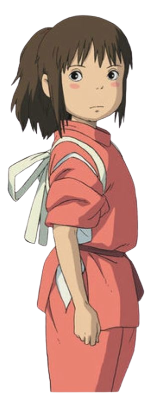

2001
Spirited Away
IMDB

The film is celebrated for its stunning animation, imaginative storytelling, and richly detailed world. The story follows a young girl named Chihiro who, while moving to a new neighborhood with her parents, accidentally enters a mysterious and magical world. Her parents are transformed into pigs after indulging in the food meant for spirits, and Chihiro finds herself working in a bathhouse run by the witch Yubaba to find a way to save them.
Director : Hayao Miyazaki